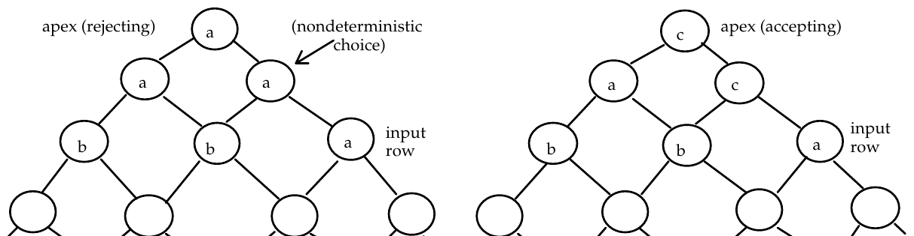

The Twentieth Annual ACM International Collegiate Programming Contest Finals · Problem F
A nondeterministic trellis automaton (NTA) is a kind of parallel machine composed of identical finite-state processors arranged in an infinite triangular trellis, or series of rows of processors. The top, or apex, of the triangle is a single processor. The next row has two processors and each successive row of an NTA has one more processor than the row above it. Each processor in an NTA is connected to two children in the row below it. Computation in an NTA occurs bottom up; the state of each processor in a row is based on the state of the processor's children and a transition table. The input to an NTA is the initial configuration, or state, of one row of processors. The input is specified by a string that gives the initial state of each processor in a row so that an n-character string specifies the initial configuration for a row of n processors. Computation proceeds up the NTA to the apex by nondeterministically calculating the state of each processor in a row based on the transition table and the state of the processor's children in the row below.
Transitions are computed nondeterministically; an input is accepted if some computation puts the apex processor into an accepting state. An input is rejected if no computation puts the apex processor into an accepting state. For example, the table below shows transitions for a 3-state NTA. States are labeled by characters "a", "b", and "c"; the only accepting state is "c".
right child
State transition a b c
table: a a a c State c is the only
b a,c a b accepting state
c c b a
The diagram below shows two computations for the input "bba". The computation on the left rejects the input since the state of the apex is "a"; but the computation on the right accepts the input since the state of the apex is "c". Since some computation results in an accepting state for the apex, the string "bba" is accepted by the NTA. The input "bbb" would be rejected by this NTA since the only computation results in the state "a" for the apex.

The states (and inputs) of an NTA are consecutive lowercase letters. Thus the states for a 5-state NTA are "a", "b", "c", "d", and "e". Accepting states are grouped at the end of the letters so that if a 5-state NTA has two accepting states, the accepting states are "d" and "e".
The input for your program is a sequence of NTA descriptions and strings (which are the inputs to the NTAs). An NTA description is given by the number of states n followed by the number of accepting states on one line separated by whitespace. The n x n transition table follows in row-major order; each transition string is given on a separate line. Each NTA description is followed by its input strings, one per line. A string of "#" terminates the input strings. An NTA description in which the number of states is zero terminates the input for your program.
NTAs will have at most 15 states, input strings will be at most 15 characters.
For each NTA description, print the number of the NTA (NTA #1, NTA #2, etc. ). For each input string for an NTA print the word "accepted" or "rejected" followed by an echo print of the input string.
3 1 a a c ca a b c b a bba aaaaa abab babbba a baaab abbbaba baba bcbab # 3 2 ab a c a ab b c b ab abc cbc # 0 0
NTA # 1 accept bba reject aaaaa reject abab accept babbba reject a accept baaab accept abbbaba accept baba reject bcbab NTA # 2 reject abc accept cbc